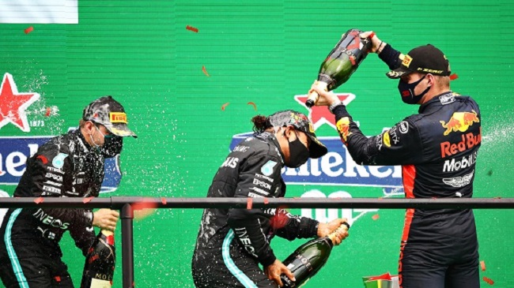
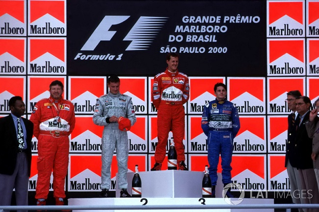
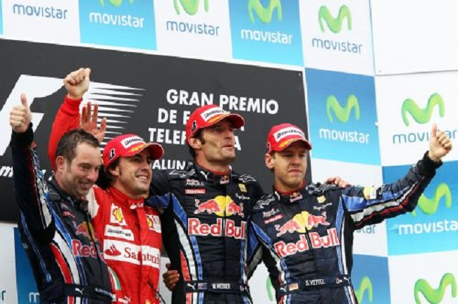
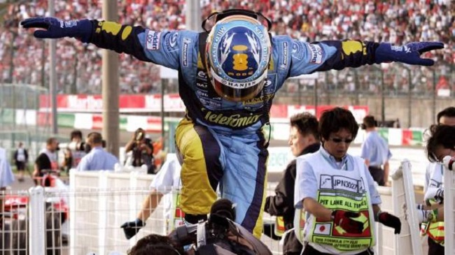
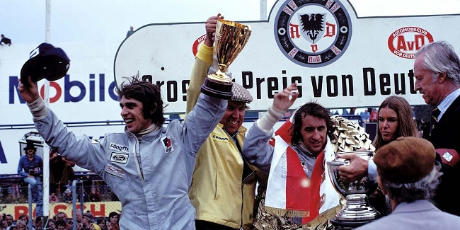

2021 Max Verstappen Paises Bajos Red Bull
2020 Lewis Hamilton Gran Bretaña Mercedes
2019 Lewis Hamilton Gran Bretaña Mercedes
2018 Lewis Hamilton Gran Bretaña Mercedes
2017 Lewis Hamilton Gran Bretaña Mercedes
2016 Nico Rosberg Alemania Mercedes
2015 Lewis Hamilton Gran Bretaña Mercedes
2014 Lewis Hamilton Gran Bretaña Mercedes
2013 Sebastian Vettel Alemania Red Bull Renault
2012 Sebastian Vettel Alemania Red Bull Renault
2011 Sebastian Vettel Alemania Red Bull Renault
2010 Sebastian Vettel Alemania Red Bull Renault

2009 Jenson Button Gran Bretaña BrawnGP
2008 Lewis Hamilton Gran Bretaña McLaren
2007 Kimi Raikkonen Finlandia Ferrari
2006 Fernando Alonso España Renault
2005 Fernando Alonso España Renault
2004 M. Schumacher Alemania Ferrari
2003 M. Schumacher Alemania Ferrari
2002 M. Schumacher Alemania Ferrari
2001 M. Schumacher Alemania Ferrari
2000 M. Schumacher Alemania Ferrari
1999 M. Hakkinen Finlandia Ferrari

1998 M. Hakkinen Finlandia McLaren Mercedes
1997 J. Villeneuve Canadá Williams Renault
1996 D. Hill Gran Bretaña Williams Renault
1995 M. Schumacher Alemania Benetton Renault
1994 M. Schumacher Alemania Benetton Ford
1993 A. Prost Francia Williams Renault
1992 N. Mansell Gran Bretaña Williams Renault
1991 A. Senna Brasil McLaren Honda
1990 A. Senna Brasil McLaren Honda
1989 A. Prost Francia McLaren Honda
1988 A. Senna Brasil McLaren Honda
1987 N. Piquet Brasil Williams Honda
1986 A. Prost Francia Williams Honda

1985 A. Prost Francia McLaren Porsche
1984 N. Lauda Austria McLaren Porsche
1983 N. Piquet Brasil Ferrari
1982 K. Rosberg Finlandia Ferrari
1981 N. Piquet Brasil Williams Ford
1980 A. Jones Australia Williams Ford
1979 J. Scheckter Sudáfrica Ferrari
1978 M. Andretti Estados Unidos Lotus Ford
1977 N. Lauda Austria Ferrari
1976 J. Hunt Gran Bretaña Ferrari
1975 N. Lauda Austria Ferrari
1974 E. Fittipaldi Brasil McLaren Ford
1973 J. Stewart Gran Bretaña Lotus Ford

1972 E. Fittipaldi Brasil Lotus Ford
1971 J. Stewart Gran Bretaña Tyrrell Ford
1970 J. Rindt Austria Lotus Ford
1969 J. Stewart Gran Bretaña Matra Ford
1968 G. Hill Gran Bretaña Lotus Ford
1967 D. Hulme Nueva Zelanda Brabham Repco
1966 J. Brabham Australia Brabham Repco
1965 J. Clark Gran Bretaña Lotus Climax
1964 J. Surtees Gran Bretaña Ferrari
1963 J. Clark Gran Bretaña Lotus Climax
1962 G. Hill Gran Bretaña BRM

1961 P. Hill Estados Unidos Ferrari
1960 J. Brabham Australia Cooper Climax
1959 J. Brabham Australia Cooper Climax
1958 M. Hawthorn Gran Bretaña Vanwall
1957 J. M. Fangio Argentina Maserati
1956 J. M. Fangio Argentina Lancia/Ferrari
1955 J. M. Fangio Argentina Mercedes
1954 J. M. Fangio Argentina Mercedes/Maserati
1953 A. Ascari Italia Ferrari
1952 A. Ascari Italia Ferrari